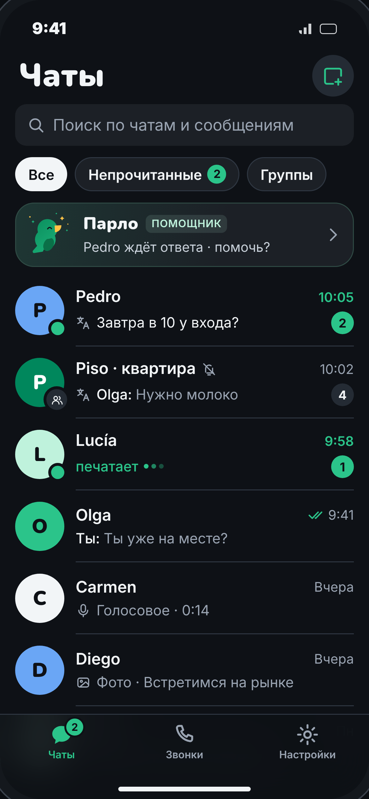
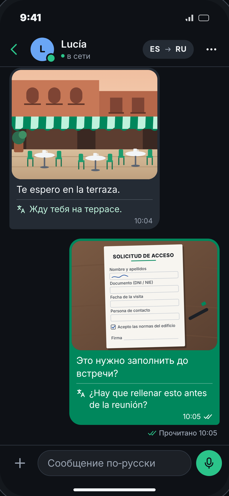
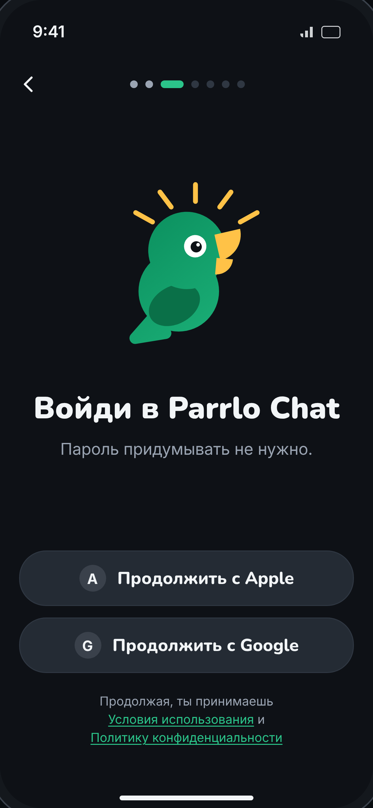
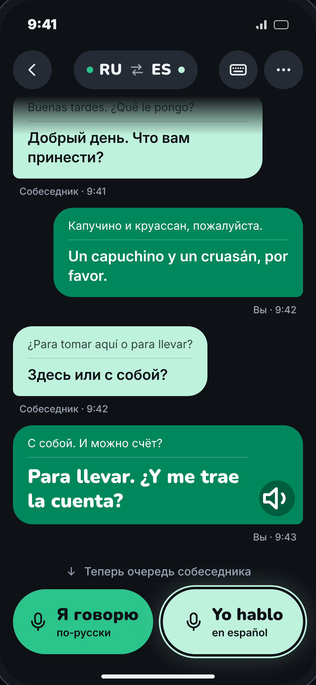
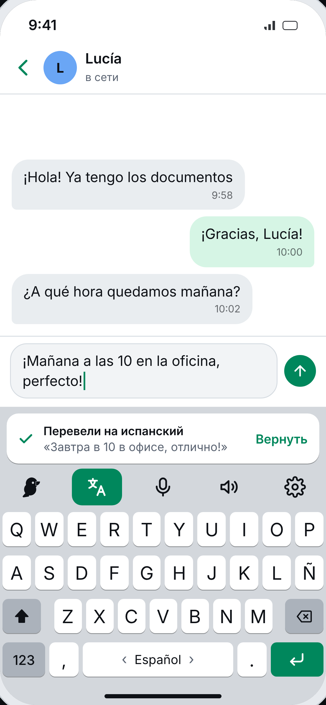
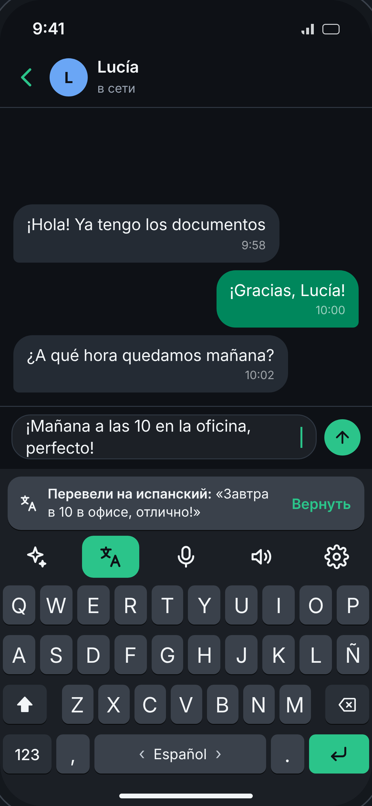

Эталонные экраны · первые пять, v2
Экраны для parrlo.com, по которым дальше выстраиваются приложения. 390×844 pt, PNG @3× (1170×2532), брендбук v2.3, нейтральная рамка — см. шаблон. v2 (решение Мурата 18.11): не копия текущей сборки, а «как должно быть» — со всеми состояниями. Тексты черновые; на странице каждого экрана — все состояния, решения сверх сборки, токены, контрасты и что не утверждено.






